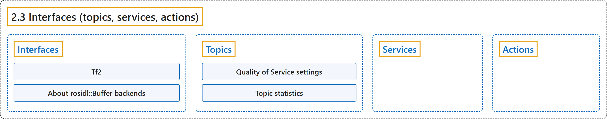

2.3 Interfaces (topics, services, actions)
Classification

Glossary
| Term | Definition | 中文翻译 | Source |
|---|---|---|---|
| 2.3 Interfaces (topics, services, actions) 接口（话题、服务、动作） |
"Interfaces in ROS define how nodes exchange data, helping you design communication between different parts of a robotic application." | ROS 中的接口规定节点之间如何交换数据，帮助你设计机器人应用各部分之间的通信。 | Open Robotics, n.d.-d, "Interfaces (topics, services, actions)", para. 1 |
| Interfaces 接口 |
"Interfaces in ROS define the structured data used by nodes to exchange messages, make requests, and coordinate long-running tasks." | ROS 中的接口规定节点用来交换消息、发出请求和协调长时间任务的结构化数据。 | Open Robotics, n.d.-c, "Interfaces", para. 1 |
| Tf2 tf2 |
"tf2 is the transform library, which lets the user keep track of multiple coordinate frames over time." | tf2 是坐标变换库，让用户随时间跟踪多个坐标系。 | Open Robotics, n.d.-g, "Overview", para. 1 |
| About rosidl::Buffer backends rosidl::Buffer 后端 |
"rosidl::Buffer backends let message payloads use vendor-specific memory domains such as GPU memory while keeping familiar message APIs." | rosidl::Buffer 后端让消息载荷使用 GPU 内存等厂商专用内存域，同时保持熟悉的消息 API。 | Open Robotics, n.d.-a, "About rosidl::Buffer backends", para. 1 |
| Topics 话题 |
"Topics in ROS provide a publish/subscribe interface for sharing continuous data streams between nodes." | ROS 中的话题提供一种发布/订阅接口，用于在节点之间共享连续的数据流。 | Open Robotics, n.d.-i, "Topics", para. 1 |
| Quality of Service settings 服务质量设置 |
"ROS 2 offers a rich variety of Quality of Service (QoS) policies that allow you to tune communication between nodes." | ROS 2 提供丰富多样的服务质量（QoS）策略，让你调节节点之间的通信。 | Open Robotics, n.d.-e, "Overview", para. 1 |
| Topic statistics 话题统计 |
"ROS 2 provides integrated measurement of statistics for messages received by any subscription." | ROS 2 提供对任何订阅所收到消息的统计数据的集成测量。 | Open Robotics, n.d.-h, "Overview", para. 1 |
| Services 服务 |
"In ROS 2, a service refers to a remote procedure call." | 在 ROS 2 中，服务指的是一次远程过程调用。 | Open Robotics, n.d.-f, "Services", para. 2 |
| Actions 动作 |
"In ROS 2, an action refers to a long-running remote procedure call with feedback and the ability to cancel or preempt the goal." | 在 ROS 2 中，动作指的是一次长时间运行的远程过程调用，带有反馈，并能取消或抢占目标。 | Open Robotics, n.d.-b, "Actions", para. 2 |
References
Open Robotics. (n.d.-a). About rosidl::Buffer backends. ROS 2 Documentation: Lyrical. Retrieved October 31, 2026, from https://docs.ros.org/en/lyrical/ROS-Framework/interfaces/Working-with-interfaces/Buffer-Backends/About-Buffer-Backends.html
Open Robotics. (n.d.-b). Actions. ROS 2 Documentation: Lyrical. Retrieved October 31, 2026, from https://docs.ros.org/en/lyrical/ROS-Framework/interfaces/About-Actions.html
Open Robotics. (n.d.-c). Interfaces. ROS 2 Documentation: Lyrical. Retrieved October 31, 2026, from https://docs.ros.org/en/lyrical/ROS-Framework/interfaces/About-Interfaces.html
Open Robotics. (n.d.-d). Interfaces (topics, services, actions). ROS 2 Documentation: Lyrical. Retrieved October 31, 2026, from https://docs.ros.org/en/lyrical/ROS-Framework/Interfaces-Topics-Services-Actions.html
Open Robotics. (n.d.-e). Quality of Service settings. ROS 2 Documentation: Lyrical. Retrieved October 31, 2026, from https://docs.ros.org/en/lyrical/ROS-Framework/interfaces/topics/About-Quality-of-Service-Settings.html
Open Robotics. (n.d.-f). Services. ROS 2 Documentation: Lyrical. Retrieved October 31, 2026, from https://docs.ros.org/en/lyrical/ROS-Framework/interfaces/About-Services.html
Open Robotics. (n.d.-g). Tf2. ROS 2 Documentation: Lyrical. Retrieved October 31, 2026, from https://docs.ros.org/en/lyrical/ROS-Framework/interfaces/About-Tf2/About-Tf2.html
Open Robotics. (n.d.-h). Topic statistics. ROS 2 Documentation: Lyrical. Retrieved October 31, 2026, from https://docs.ros.org/en/lyrical/ROS-Framework/interfaces/topics/About-Topic-Statistics.html
Open Robotics. (n.d.-i). Topics. ROS 2 Documentation: Lyrical. Retrieved October 31, 2026, from https://docs.ros.org/en/lyrical/ROS-Framework/interfaces/About-Topics.html